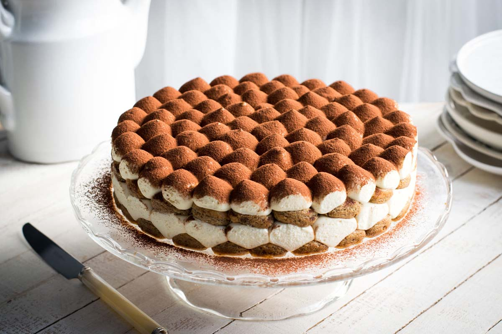

Tiramisù

Easy Course:
Delight in the rich, creamy layers of a traditional Italian tiramisu—a dessert beloved worldwide for its perfect balance of flavors.
Tiramisu, which translates to “pick me up,” earned its name thanks to its energizing blend of coffee, mascarpone cheese, and cocoa.
This no-bake classic is as elegant as it is easy to prepare, making it a favorite for both dinner parties and cozy evenings in.
Legend has it that tiramisu originated in the Veneto region, where Italian chefs crafted this heavenly dessert to combine simple ingredients into a luxurious treat.
From its coffee-soaked ladyfingers to its luscious mascarpone cream, every bite of tiramisu offers a journey through Italy's culinary heritage.
Ingredients
Ingredients for a 9x13-inch (20x30-cm) pan
- Mascarpone cheese 3 ⅓ cups (750 g)
- Ladyfingers 8.75 oz (250 g)
- Coffee 1 ⅓ cup (300 g) - (made in a moka pot, with sugar to taste)
- Eggs 5 (260 g) - (very fresh, medium)
- Sugar ⅔ cup (120 g)
For decorating
- Unsweetened cocoa powder to taste
Steps
- Prepare the coffee using a moka pot to get 1 1/4 cups (300 g), then add sugar to taste (we added a teaspoonful) and leave it to cool in a large, shallow bowl.
- Separate the eggs, being careful to keep the whites totally free of yolk so that they will whip well.
- Beat the yolks with a hand mixer, adding half of the sugar.
- As soon as the mixture has turned light and foamy, and while the mixer is still running, add the mascarpone a little at a time.
- Once all the mascarpone has been added, you'll have a dense, compact cream and set this aside.
- Clean the mixer well and move on to whipping the egg whites.
- Once they're foamy, pour in the remaining sugar a little at a time.
- Whip the whites to stiff peaks (you'll know they're ready when you can turn the bowl upside down without the mixture moving.).
- Take a spoonful of the whites and add it to the bowl with the mascarpone cream, then stir vigorously with a spatula to dilute the mixture.
- Next, add the rest of the egg whites little by little, folding them in by mixing very gently from the bottom upwards.
- Spread a heaping spoonful on the bottom of a glass baking dish measuring 9x13 inches (20x30 cm), ensuring the entire base is covered.
- Now dip the ladyfingers into the cold coffee for a few seconds, first on one side and then on the other.
- Then arrange the coffee-soaked ladyfingers in the dish, trying to position them all in one direction, to form a first layer of cookies.
- Add another layer of mascarpone cream and level it so the cookies are covered completely.
- Continue to add the coffee-soaked ladyfingers and cream in alternating layers, always leveling the surface of the cream.
- Finally, transfer the remaining cream to a pastry bag with a ½-inch (12-mm) plain tip and cover the entire surface of the tiramisu with dabs of cream.
- Sprinkle over the unsweetened cocoa powder and leave the tiramisu to set in the fridge for a couple of hours.
- Your tiramisu is ready to be enjoye!
Return to top
Return to Main Page